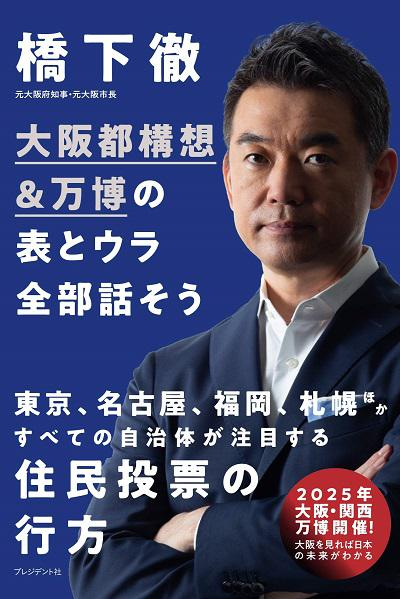

★公式メルマガ「『問題解決の授業』」／橋下徹と双方向の意見交換ができるオンラインサロン。今起きている諸問題を題材に、身に付けたい実践力や思考力を一緒に学びましょう！
（メルマガのバックナンバーも随時掲載しております）
 ▲【公式メールマガジン＆公式オンラインサロン 】へのご入会はこちらから！
▲【公式メールマガジン＆公式オンラインサロン 】へのご入会はこちらから！
★note購読はこちらから！
noteでは今号のみの単号購読も可能です！
＜今号のメルマガ本論抜粋＞
■大阪の停滞を打ち破れ！ 知事として作らせた夢満載の「成長戦略」
「大阪都構想によって大阪がどのように成長するのかわからない」「大阪都構想によって大阪が成長することはない」「制度を変えるだけで大阪が成長するわけがない」......。
大阪都構想については、これまでこのような批判を散々受けてきたし、今回の住民投票が終わった後もメディアにおいて同じように批判するインテリたちが山のように存在する。
こういう連中は「大阪の成長戦略」というものを一度も読んだことがないのだろう。
僕は2008年に大阪府知事に就任して、大阪の成長戦略というものをまとめた。府庁職員が反対したけど、数値目標にこだわった。そして年に2度、進捗チェックを行った。
当時、どこの自治体にも「総合計画」なるものが存在した。大阪府にももちろん存在し、府庁職員のエリートが集まる「政策企画部」のメインの仕事が、この総合計画をまとめることだった。
ただこの総合計画は、行政全般にわたる計画であり、医療・福祉・教育から都市整備に至るまでありとあらゆる話が網羅的・総花的に記載され、分厚い本にまとめられている。
いわゆる役人用の行政的な計画であって、ゆえにインパクトがない。役所ができることを、漏れなく広く浅く、まあこんな程度なら実現できるだろうというレベルで書かれている。
だから大阪には必要なことだけど、それを実現するのは難しいだろうな、というものはあえて書かない。
これでは沈滞している大阪は前進しないよね。
そこで僕は、府庁職員が実現できるかどうかとは関係なく、大阪を成長させるためには何が必要なのか、夢のある理想論を打ち出そうと大号令をかけた。
（続きはページ上部バナーよりメールマガジンにお申込みいただき、アーカイブにてお読みください。アーカイブは過去4号分ご覧いただけます）
＜上記本論につづく内容一覧＞
■松井さんと連携、府と市の「成長戦略」を工程表つきで一本化
■「都構想で大阪の成長はない」と断言した中野雅至氏の批判はここが間違い
■改革を進め成功するほどに難しくなる「抜本改革」のジレンマ
■目的は「大阪をよくすること」、都構想は手段に過ぎない
＜その他コーナー（秘書執筆のコーナーです）＞
■今週の質問タイム
〔質問〕
40代になってから、体力激減、脂肪率増加が止まりません。橋下さんの健康維持や体力作りについて教えてください。
〔橋下徹〕
（回答はメルマガにて）
■橋下徹・今週のツイート
（内容はメルマガにて）
■活動日記
橋下徹のスケジュールを公開しています！
（内容はメルマガにて）
■最近行ったお気に入りレストラン
（お店の紹介はメルマガにて）
■今週のピックアップ
「また大阪府は不要不急の外出自粛です！」
（内容はメルマガにて）
■編集部から
（内容はメルマガにて）
※今号のメールマガジン全文は約6900字あります！
『大阪都構想&万博の表とウラ全部話そう』（プレジデント社）大好評発売中!!
